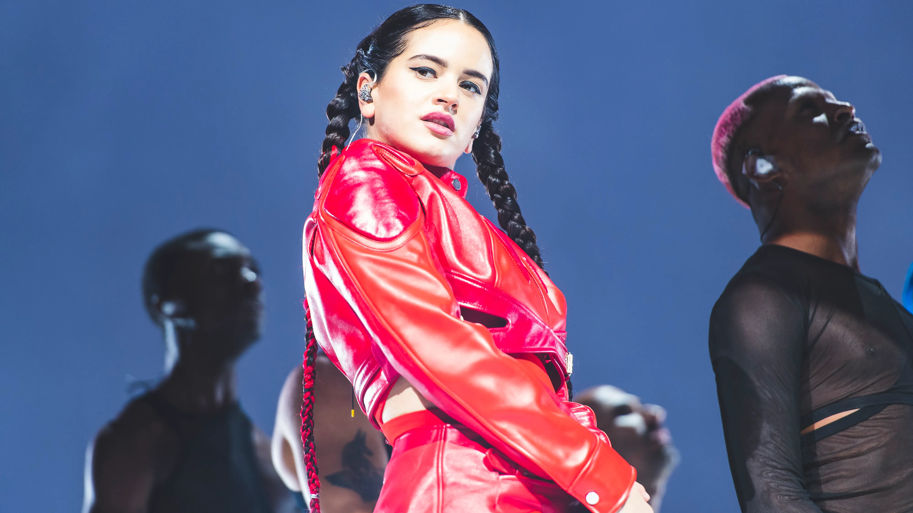
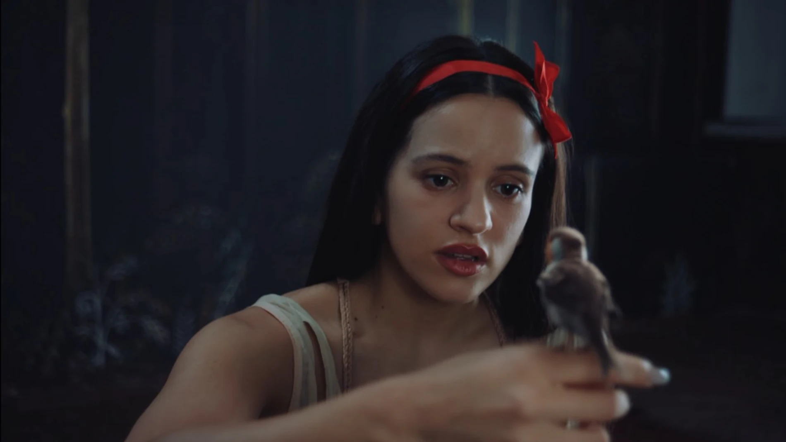
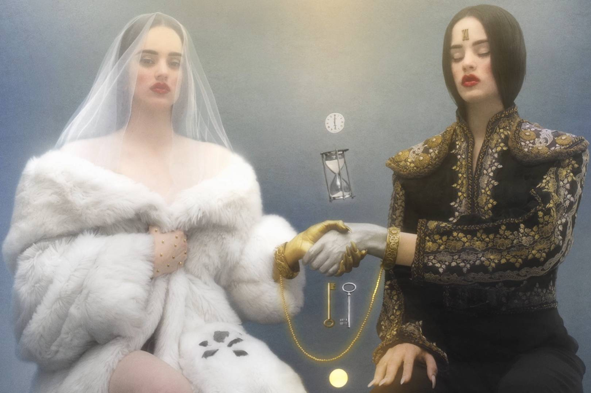
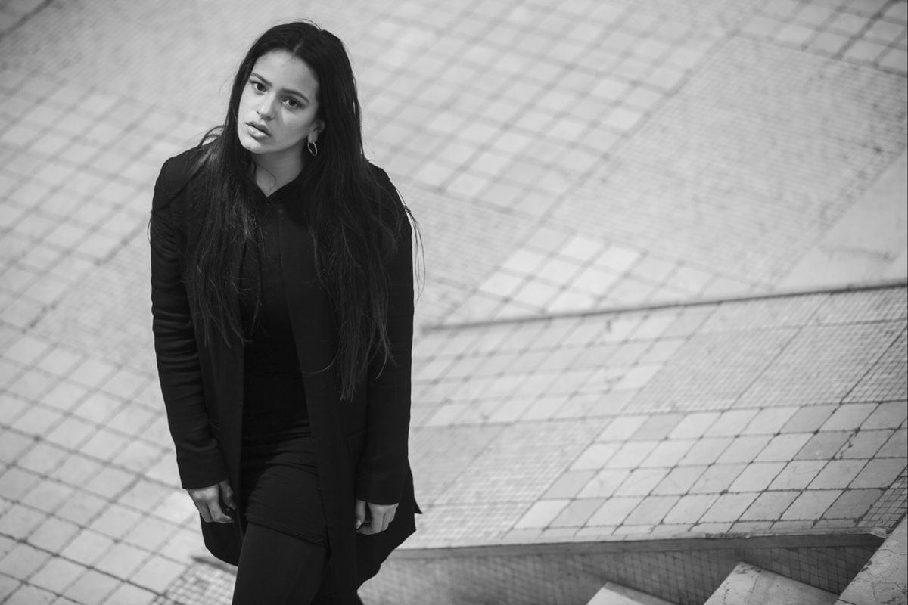
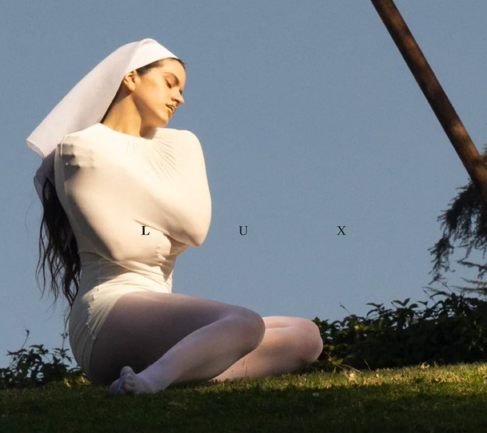
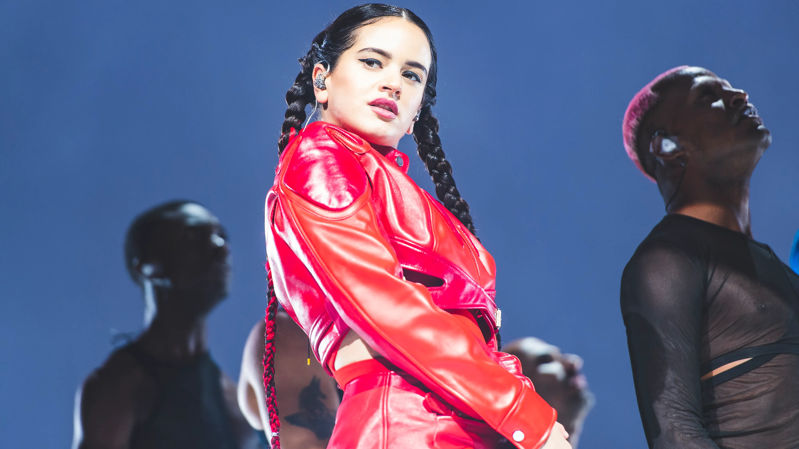
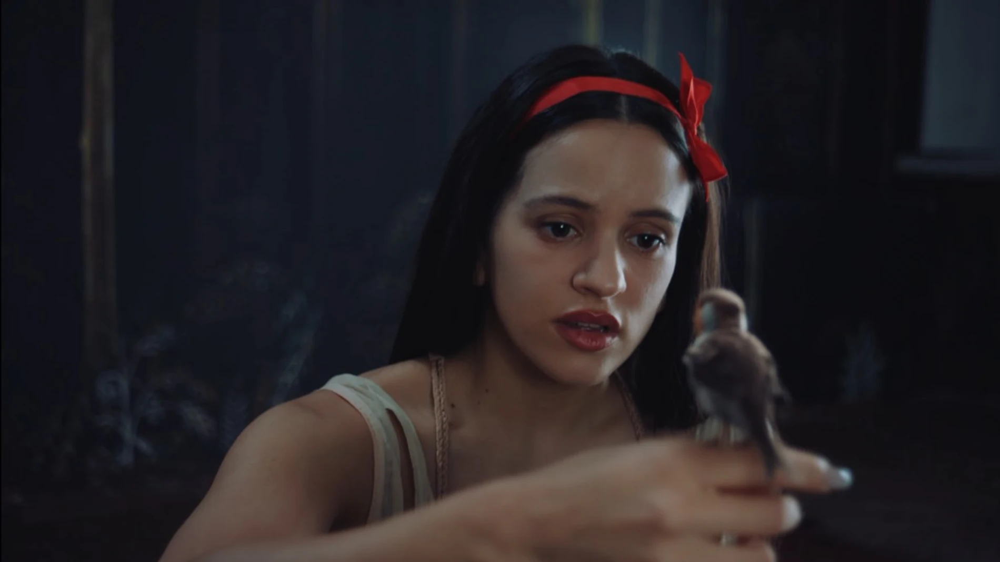
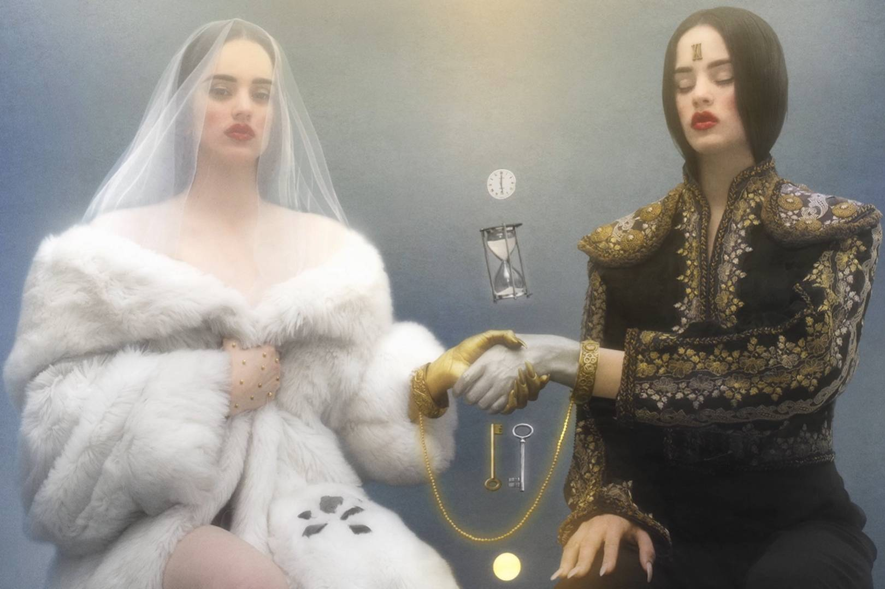
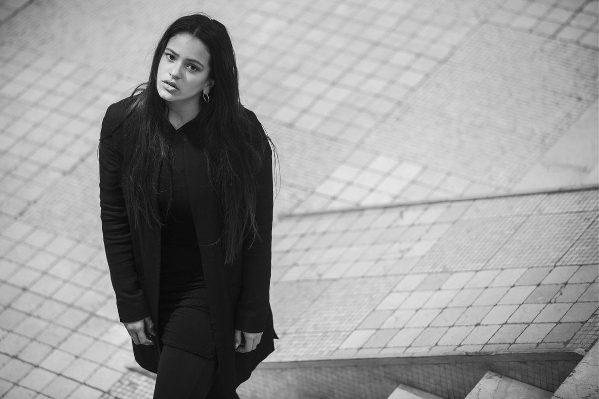
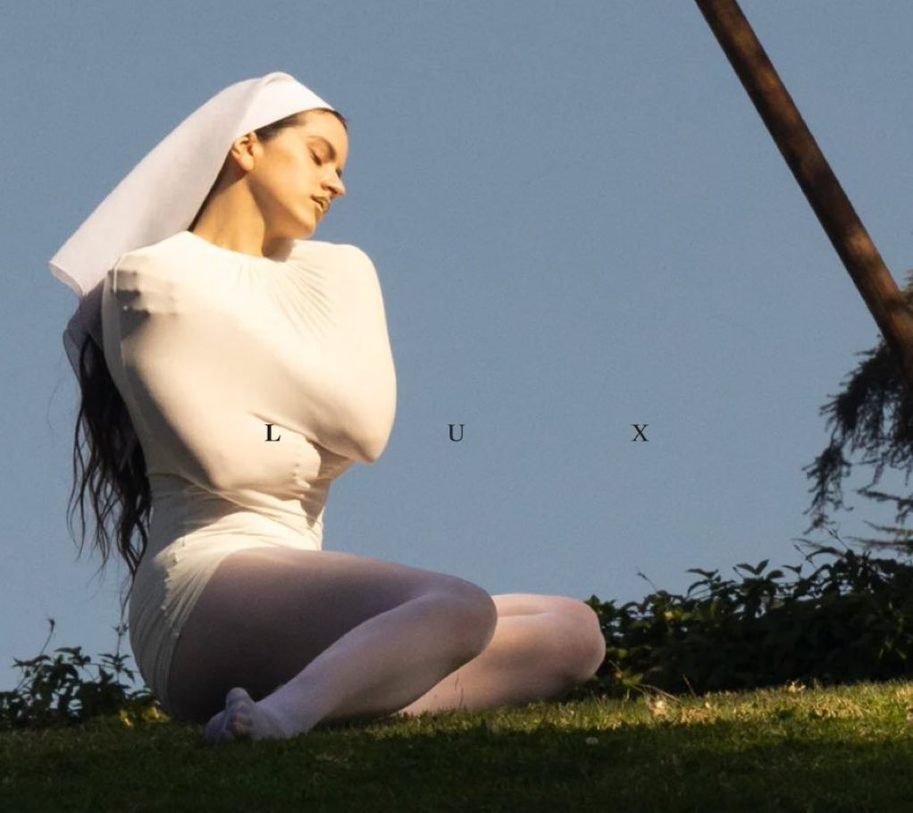

Rosalia Vila Tobella, nacida el 25 de septiembre de 1992 en San Esteban, Barcelona, es una cantautora, compositora y productora española. Nacida y criada en las afueras de Barcelona, ha sido descrita por la emisora de radio estadounidense NPR como una estrella del pop atípica debido a "su versatilidad musical y tendencias experimentales que desdibujan los límites entre distintos géneros"
Después de descubrir la música folclórica española a los trece años, Rosalía estudió musicología en la Escuela Superior
de Música de Cataluña mientras actuaba en bares musicales y bodas.
Este último generó el sencillo "Malamente", que llamó la atención del público en general español, y fue aclamado por la crítica universal.
Ganador del Premio Grammy Latino al álbum del año, del Premio Grammy al mejor álbum urbano o rock latino e incluido en los 500 mejores álbumes de todos los
tiempos de Rolling Stone, El mal querer (2018) comenzó el ascenso de Rosalía a la escena musical internacional.
Su primer sencillo de éxito internacional fue su colaboración en 2019 con J Balvin, "Con altura", canción de reguetón que marcó el viaje de Rosalía a la música
urbana. Más tarde colaboró con otros músicos como Bad Bunny, Ozuna, Billie Eilish, Travis Scott y Arca, logrando múltiples elogios.
Posteriormente, Rosalía se aventuró más en la música latina con su tercer álbum de estudio Motomami (2022), partiendo del nuevo sonido flamenco de su predecesor.
El álbum logró un éxito internacional con sus sencillos "La fama", "Saoko" y "Despechá" y se convirtió en el álbum mejor reseñado del año en Metacritic.
El 20 de octubre de 2025, dio a conocer que su nuevo disco Lux sería lanzado el 7 de noviembre, que contará con 18 canciones, cuatro movimientos y las colaboraciones
de Björk, Carminho, Estrella Morente, Silvia Pérez Cruz, la Escolania de Montserrat, el Cor de Cambra del Palau de la Música Catalana, Yahritza y su Esencia e
Yves Tumor.
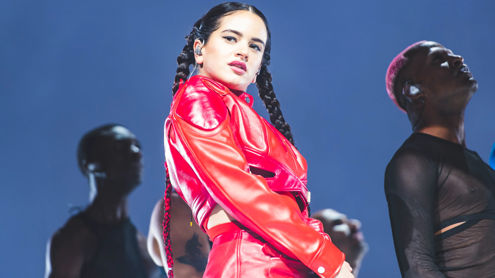
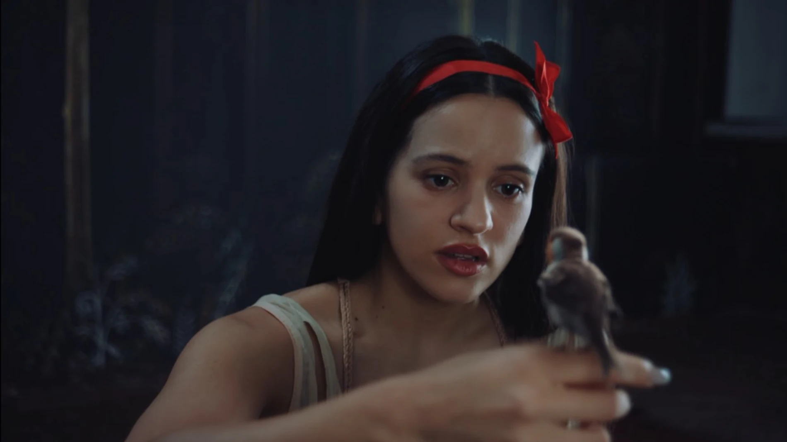
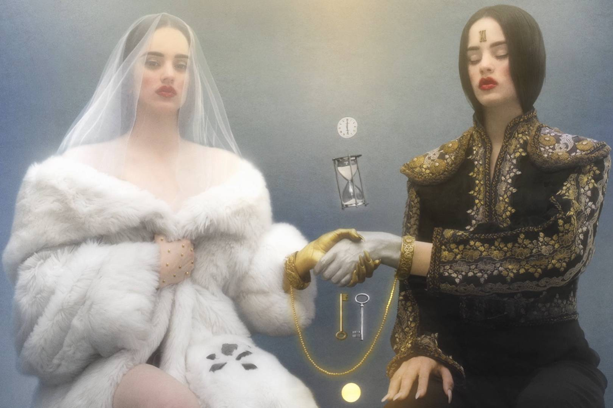
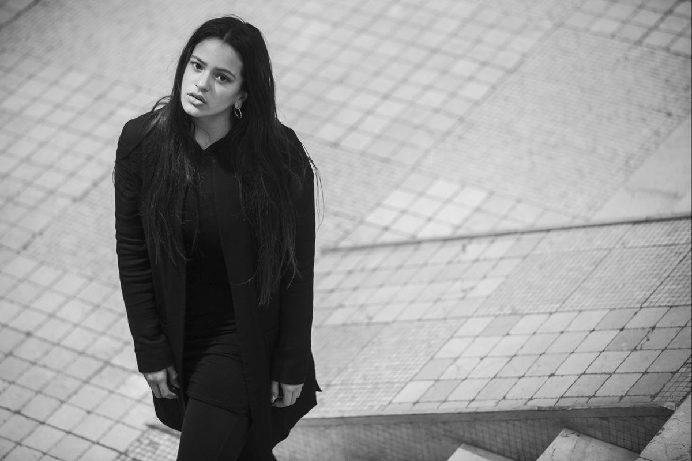
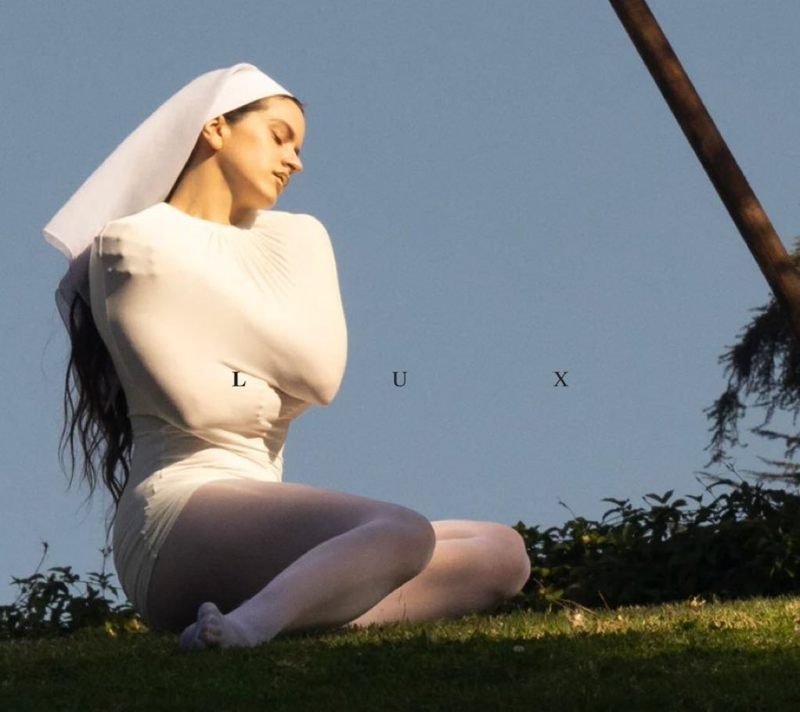